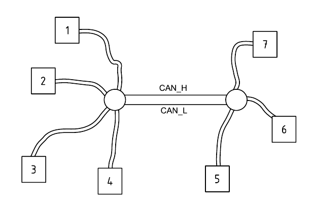
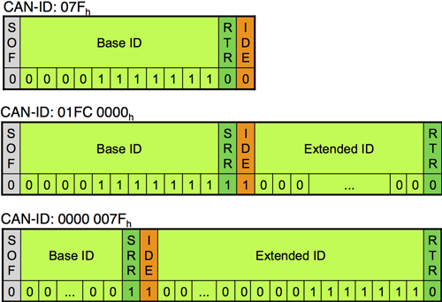
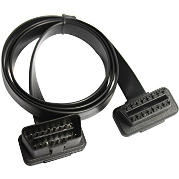

Preface
The automotive industry is highly rigorous, and many products must be designed according to standards. First, we need to clarify the relationship between ISO and SAE.
The SAE J-series standards are written for ground vehicles and cover almost every electronic component. They are oriented toward the U.S. market, while ISO standards are international—both GB (China) and EU standards often reference ISO. ISO may publish new standards by referencing standards provided by SAE, and a single ISO standard may include multiple SAE-drafted standards.
Inside a vehicle, there are many Electronic Control Units (ECUs) responsible for different tasks, such as door control modules, lighting control modules, and so on. In the beginning, they used point-to-point communication: each piece of information was exchanged over a dedicated wire. As the number of ECUs increases, the wiring harness grows multiplicatively—raising cost, consuming more space, adding weight, and making internal connections more complex and risk-prone.

Therefore, engineers designed a bus-based communication approach. Each ECU is connected to a shared bus, avoiding the pitfalls of point-to-point communication.

SAE classifies in-vehicle bus networks into four categories by transmission speed:
| Category | Bit rate | Use cases | Protocol type |
|---|---|---|---|
| Class A | Below 10Kb/s | Doors, A/C, seats | LIN |
| Class B | 10 to 125Kb/s | Emissions data, cluster data | CAN |
| Class C | 125Kb/s to 1Mb/s | Traction control, braking systems | CAN |
| Class D | 1Mb/s to 10Mb/s | Multimedia systems | Most, FlexRay, Byteflight |
Today, most in-vehicle networks at home and abroad use CAN; some also use LIN, MOST, FlexRay, Ethernet, and so on. CAN remains the most widely deployed. These notes focus on CAN and expand to related topics. Since different OEMs’ CAN implementations may differ in details—and may not strictly conform to the spec (one reason is that standards cannot satisfy every business requirement)—for consistency, these notes primarily follow ISO specifications.
CAN
CAN (Controller Area Network, compliant with ISO 11898) is a controller-area network protocol used in manufacturing and the automotive industry. It offers high speed and long distance. Embedded systems and ECUs can communicate using the CAN protocol.
In 1992, the CAN data link layer and CAN high-speed physical layer were standardized internationally in ISO 11898, which consists of seven parts. I briefly looked at parts 4, 5, and 6; they supplement some shortcomings of parts 1, 2, and 3 and are meaningful, but they are rarely used in the domestic automotive field at present, so I won’t dive into them here. The titles of each part are:
- ISO 11898-1 Data link layer and physical signaling
- ISO 11898-2 High-speed medium access unit
- ISO 11898-3 Low-speed, fault-tolerant medium access unit
- ISO 11898-4 Time-triggered communication
- ISO 11898-5 Low-power high-speed medium access unit
- ISO 11898-6 Selective wake-up high-speed medium access unit
The figure below classifies CAN from different perspectives: the relationship among CAN standards, the network model layers, and implementations. Currently, ISO 11898 mainly covers the Physical Layer (PL), Data Link Layer (DLL), and Application Layer (AL).

According to ISO/IEC 8802-2 (IEEE 802.2), the data link layer can be split into two sublayers:
- Logical Link Control (LLC)
- Receive filtering
- Overload notification
- Recovery management
- Medium Access Control (MAC)
- Data encapsulation/decapsulation
- Frame encoding (stuffing/destuffing)
- Medium access management
- Error detection
- Fault confinement
- Serialization/deserialization
The physical layer can be split into three sublayers:
- Physical Coding Sub-layer (PCS)
- Physical Medium Attachment (PMA)
- Medium Dependent Interface (MDI)
From the CAN perspective, an ECU can be viewed as consisting of:
- Microcontroller Unit (MCU), AL
- CAN Controller, DLL + PCS of PL
- CAN Transceiver, PMA and MDI of PL
CAN Physical Layer
CAN uses a two-wire differential signal. Data is transmitted over two lines: CANH (+) and CANL (-). The medium can be coaxial cable, optical fiber, or twisted pair. Differential signaling helps reduce external interference so the differential circuit can extract the useful signal.
Typically, twisted pair is used to form a serial bus, and termination resistors (matched in resistance/impedance) are placed at the bus endpoints to prevent reflections that can affect transmission quality. Newer CAN buses use distributed resistors, also called ECU load resistors—i.e., a “central termination resistor” in the engine control unit plus high-ohmic resistors in other control units.
Nodes on a CAN bus use a multi-master communication model. Each node is connected to the bus, there is no limitation on node count, and messages are broadcast so every node can receive them.

According to the MAU definition, CAN signaling can be categorized into High-speed CAN (ISO 11898-2) and Low-speed CAN (ISO 11898-3).
ISO 11519 is the low-speed CAN standard. Originally, both the high-speed CAN data link layer and physical layer were specified in ISO 11898; later, it was split into ISO 11898-1 (data link layer only) and ISO 11898-2 (physical layer only). ISO 11519-2-1994 was replaced in 2006 by ISO 11898-3-2006, meaning products compliant with ISO 11898-3 are also compatible with ISO 11519-2.

- High-speed CAN typically runs at 500Kbps or 250Kbps and is used for real-time communications such as engine and ABS.
- Low-speed CAN typically runs at 125Kbps and is used for door locks, lighting, airbags, A/C, etc.
In-vehicle networks can use many topologies, but ISO 11898 only recommends linear and star topologies.
High-speed CAN uses a linear topology with 120Ω impedance. To ensure transmission quality, nodes should be placed as close to each other as possible.

Low-speed CAN can use either linear or star topology.

A vehicle’s internal network topology can be composed of multiple networks. Ethernet (Internet Protocol) is commonly used as the backbone network.

Different networks interconnect through a gateway (Gateway, GW). A gateway provides compatibility functions such as protocol translation and data exchange.
The gateway’s main function is to allow control units connected to different data buses to exchange data. It can be installed in the instrument cluster or inside an ECU.
Low-speed CAN is also called fault-tolerant CAN. Because differential signaling inherently mitigates common-mode interference, and because low-speed CAN uses larger signal swings than high-speed CAN, fault-tolerant CAN can operate over a single wire and maintain communication even if CAN_H or CAN_L is shorted or open-circuited.
High-speed CAN waveform:

Low-speed CAN waveform:

When one device drives a low level while another drives a high level, the bus level is still low. From a logic perspective, a CAN bus has two logic states: dominant and recessive. You can treat it as a binary stream: dominant is 0, recessive is 1.
Identifying CAN Buses
First, find twisted-pair wires. You can often distinguish CAN buses in the wiring harness by color, but the number and color scheme can vary by manufacturer.
- CAN_H
- Powertrain CAN: orange/black
- Convenience CAN: orange/green
- Infotainment CAN: orange/purple
- Instrument CAN: orange/blue
- Diagnostic CAN: orange/red
- CAN_L: orange/brown
In an ideal case where (V_{cc}) is 5V nominal, CAN bus voltages are as follows. You can use these voltage characteristics to locate and distinguish CAN wires in a harness. Note that some buses have sleep modes (common on convenience and infotainment buses; powertrain buses typically do not). Newer CAN buses may also have low-power modes.
- High-speed CAN:
- Dominant: CAN_H 3.5V, CAN_L 1.5V, differential 2V
- Recessive: CAN_H and CAN_L both 2.5V
- Low-speed CAN:
- Dominant: CAN_H 3.6V, CAN_L 1.4V, differential 2.2V
- Recessive: CAN_H 4.7V, CAN_L 0.3V, differential 4.4V
Application-Layer Extension Protocols Based on CAN
CAN can be divided into higher-layer protocols and lower-layer protocols. CAN application-layer protocols are also called CAN-based higher-layer protocols (HLPs), typically considered to be at layer 7.
Below are some CAN-based higher-layer extension protocols:
- 1992: CiA 201 series (CAN Application Layer)
- 1994: IEC 62026-3 (DeviceNet)
- 1994: SAE J1939 series
- 1994: EN 50325-4 (CANopen)
- 1999: ISO 11992 series
- 1999: MilCAN
- 2000: IEC 61162-3 (NMEA 2000)
- 2002: ISO 11783 series (Isobus)
- 2004: ISO 15765 series (OBDII/ISO-TP)
- 2007: Arinc 825/826
- 2015: UAVCAN
Frames
The physical layer converts analog signals into digital signals and passes them to the data link layer. A frame can be viewed as the protocol data unit (Protocol Data Unit, PDU) controlled by the data link layer. Each layer has its own PDU naming: the physical layer uses bits, the network layer uses packets, and the application layer uses messages.
CAN nodes’ sending and receiving are governed by four different frame types:
- Data Frame (DF): carries data from the transmitting node to receiving nodes
- Remote Frame (RF): requests other nodes to transmit a data frame with the same identifier
- Error Frame (EF): sent when a node detects an error
- Overload Frame (OF): inserts a delay between the preceding and following data frame (or remote frame)
Data frames and remote frames are separated from the previous frame (regardless of type) by an interframe space. Error frames and overload frames do not use interframe space to separate from the previous frame.

Interframe space includes the intermission field and bus idle. The intermission field consists of three recessive bits. When no frame is transmitted on the bus, it is idle; at that time the bus is at a static level, i.e., recessive (1), for an arbitrary length of time.
Data Frames
The CAN family includes classic CAN and the newer CAN FD (CAN with Flexible Data rate).
Classic CAN is CAN 2.0, introduced by Bosch in 1991, with part A and part B. CAN FD was introduced by Bosch and other experts in 2011 and is also called “flexible CAN”. Parts A and B specify two frame formats: base frame and extended frame. Therefore, data frames can be categorized into four types:
- Classic base frame (Classical Base Frame Format, CBFF)
- Classic extended frame (Classical Extended Frame Format, CEFF)
- FD base frame (FD Base Frame Format, FDFF)
- FD extended frame (FD Extended Frame Format, FEFF)
The overall structure of a CAN data frame is as follows:

It mainly consists of eight parts:
- SOF
- Arbitration field
- Control field
- Data field
- CRC field
- ACK field
- EOF
- Intermission
Base Frame
Classic CAN has an 8-byte payload and a 1Mb/s bit rate. CAN FD (CAN with Flexible Data-Rate) supports payloads larger than 8 bytes—up to 64 bytes—so the bit rate can reach 8Mb/s.

CAN and CAN FD have similar frame structures, but the details differ.

Extended Frame

Extended frames can be concatenated to form a longer ID. In the extended frame, Substitute Remote Request (SRR) replaces Remote Transmission Request (RTR), and the Identifier Extension (IDE) bit is also set to 1.
Arbitration
Both CAN and Ethernet are broadcast networks. To reduce collisions and retransmissions, Ethernet uses Carrier Sense Multiple Access with Collision Detection (CSMA/CD): before sending, Ethernet “listens” to the cable to determine whether other transmissions are in progress.
CAN uses a similar mechanism. This conflict-resolution approach is called arbitration. When the bus is idle, any node can transmit the frames described above.
During arbitration, the transmitter uses bit-wise arbitration. The Start of Frame (SOF) bit is 0. After confirming the bus is idle, the SOF can be transmitted. Next comes the 11-bit arbitration field: the transmitter compares each transmitted bit with the monitored bus level; if there is a conflict with other frames, it can be detected immediately. Dominant bits have priority, and the lower the arbitration ID value, the higher the priority.
- If the bus level matches the transmitted level, continue with the next bit.
- If another node drives a dominant bit (0) on the bus, and this node transmits a recessive bit (1), it loses arbitration and stops transmitting any bits.
- If another node drives a recessive bit (1) on the bus, and this node transmits a dominant bit (0), the transmitting node will detect an error.
In the figure below, Node3 has the lowest arbitration ID value, so it wins and transmits first.

Bit-wise arbitration can resolve conflicts between different IDs or different frame types. If a data frame conflicts with a remote frame, the data frame has priority because the RTR bit in a data frame is dominant (0). If conflicting frames have the same ID and the same type, arbitration fails and an error frame is generated. A lack of response or a corrupted frame due to errors can also cause arbitration failure; in such cases the frame is automatically retransmitted.
When multiple nodes broadcast messages at the same time, to resolve conflicts, a higher-priority node acts as the master and lower-priority nodes act as slaves. The ID of a request and its corresponding response is the same. When conflicts occur, the higher-priority master transmits unaffected, and lower-priority nodes back off proactively as slaves. They wait until the master finishes and the bus becomes idle, then retransmit.
Standards authors call this ability to keep transmitting frames even in the presence of contention “non-destructive arbitration”. This differs from Ethernet, where collision detection causes all nodes to back off.
In DeviceNet (IEC 62026-3), bit-wise arbitration and non-destructive arbitration together are referred to as Carrier Sense Multiple Access/Non-destructive Bit-wise Arbitration (CSMA/NBA).
Because standard CAN as defined in ISO 11898-1 is event-triggered and insufficient in real-time aspects, ISO 11898-4 describes a time-triggered CAN transmission mechanism (TTCAN) that avoids message conflicts by using time slots. It has not yet been widely implemented.

CAN has multiple error-detection measures: monitoring and comparing the transmitter’s output level with the monitored bus level, checking frame format, CRC (15-bit for classic CAN; 17-bit for CAN-FD payload length 8–16 bytes; 21-bit for payload length 20–64 bytes), checking stuff bits, and checking ACK.
On-Board Diagnostics
On-Board Diagnostics (OBD) was originally used for emissions monitoring. The idea originated from a General Motors patent for the Assembly Line Diagnostic Link (ALDL). Through standardized diagnostic trouble codes (DTCs, ISO 15031-6/SAE J2012), faults inside the vehicle can be quickly identified and corrected.
ISO 15031 specifies communication between external equipment and vehicle emission-related diagnostic systems, and it has seven parts:
- ISO 15031-1 General information and use-case definitions
- ISO 15031-2/SAE J1930 Terminology, definitions, abbreviations and acronyms guidelines
- ISO 15031-3/SAE J1962 Diagnostic connector and related electrical circuits specification and use
- ISO 15031-4/SAE J1978 External test equipment
- ISO 15031-5/SAE J1979 Emission-related diagnostic services
- ISO 15031-6/SAE J2012 Standardized DTC definitions
- ISO 15031-7/SAE J2186 Data link security
OBD-II
In the OBD-I era, diagnostic connector types, connector locations, DTCs, and read/write methods varied by manufacturer. OBD-II defines detailed specifications for connection protocols and more. The OBD-II connector complies with SAE J1962. It has a male (A) and female (B) version. It is D-shaped with 16 pins (2x8).


Using the female connector as an example, the pin definitions are shown below.
With CAN, pin 4 is chassis ground, pin 5 is signal ground, pin 6 is CAN_H, pin 14 is CAN_L, and pin 16 is +12V DC. ISO 15031-3 also defines pins for other protocols (ISO 14230, SAE J1850).

Today, the mainstream standard for vehicle diagnostics is OBD-II (ISO 15765), a CAN-based extension protocol. In 1996, the U.S. required all vehicles to implement OBD-II. In 2003, the EU required all vehicles to implement EOBD (nearly identical to OBD-II). In 2006, China’s National III standard required vehicles to include OBD for emissions testing. As a result, almost all vehicles now have an OBD interface—usually under the driver’s side dashboard—and it is commonly connected to a computer via DB9.
UK DB9 layout:

US DB9 layout:

The OBD-II specification consists of four parts:
- ISO 15765-1 General information
- ISO 15765-2 Network layer services specification (ISO-TP)
- ISO 15765-3 Application layer specification; implementation of UDS over CAN
- ISO 15765-4 Physical layer to network layer specification; session layer
Mapping OBD-II to the OSI seven-layer model, it can be divided into three categories:
- Diagnostic services: see ISO 15765-3
- Network layer services: see ISO 15765-2
- CAN services: see ISO 11898
UDS
In the comparison table, the right side is the legally required unified diagnostic specification, while the left side is the OEM-customizable Enhanced Diagnostic. It implements a modular diagnostic framework at the application layer for all ECUs, called Unified Diagnostic Services (UDS).

The figure below shows how UDS is implemented over CAN and labels the specs used at each layer. The UDS specification is ISO 14229.

UDS defines different request and response IDs for each service:

References
CiA: https://www.can-cia.org/can-knowledge
ZLG: Understanding fault-tolerant CAN in one article!
Wiki: Unified Diagnostic Services
 CC BY-NC-SA 4.0
CC BY-NC-SA 4.0